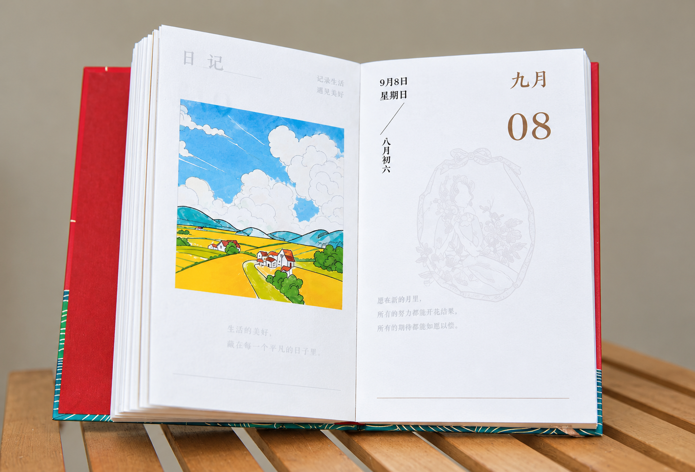
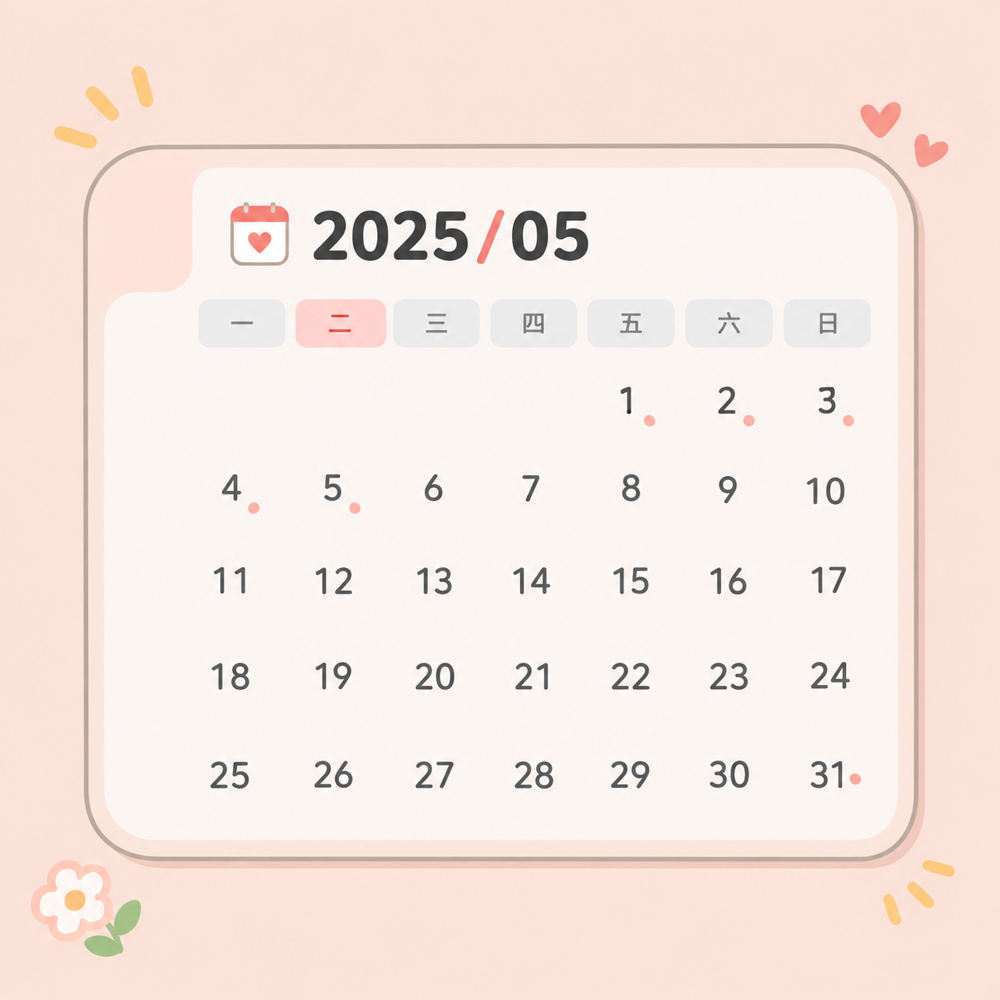
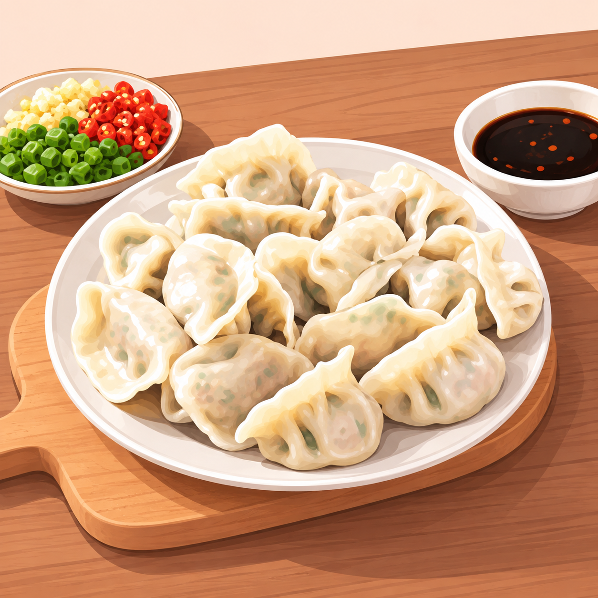
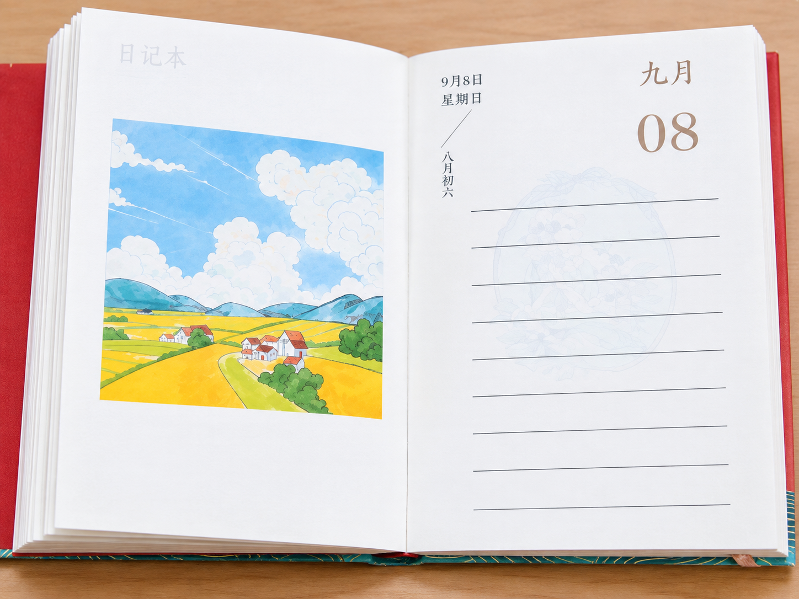
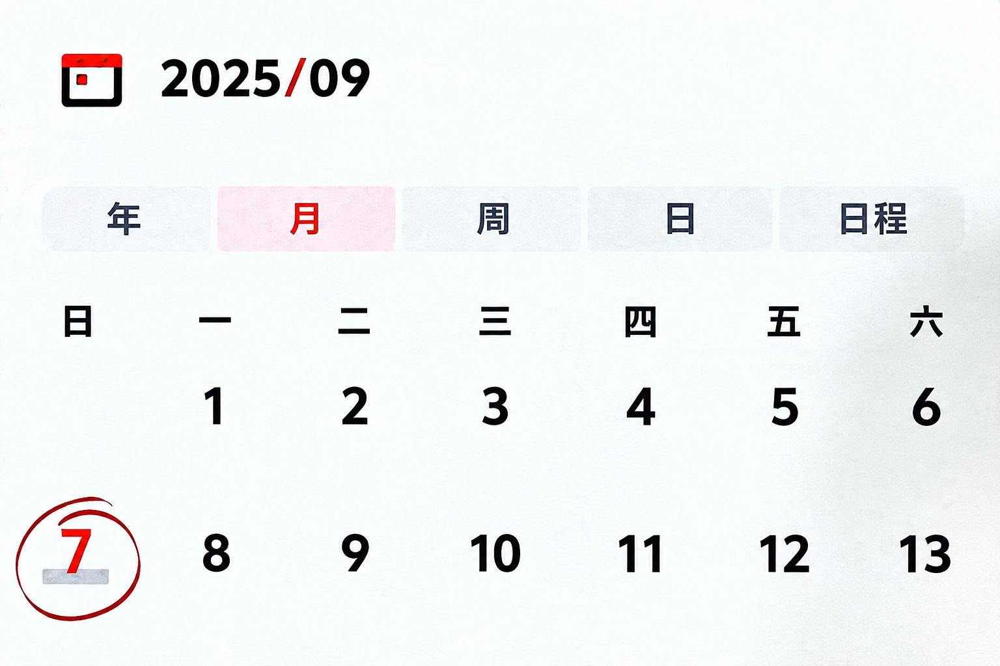
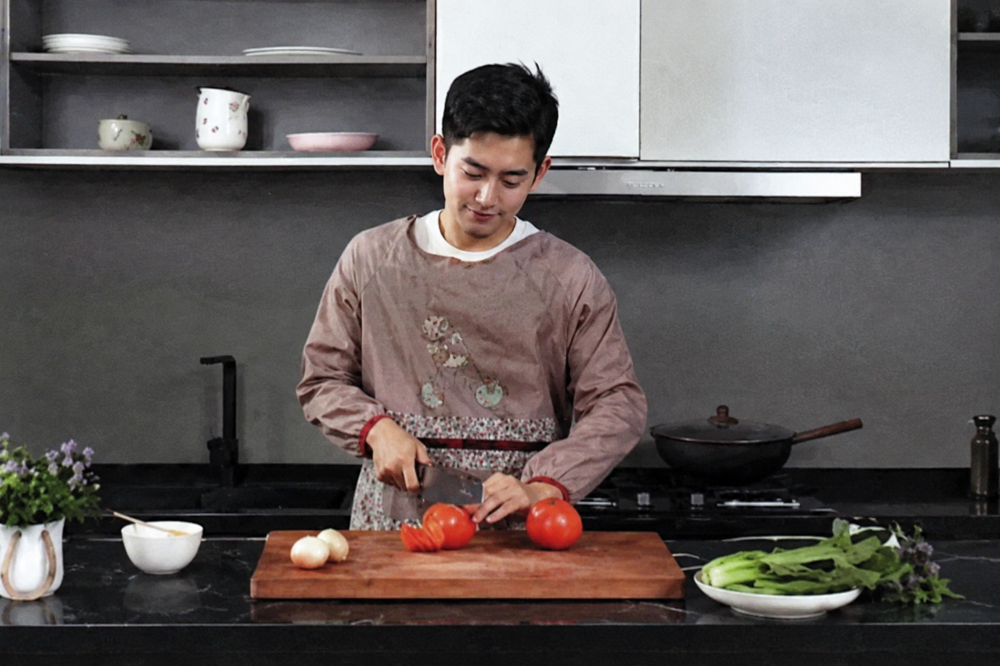
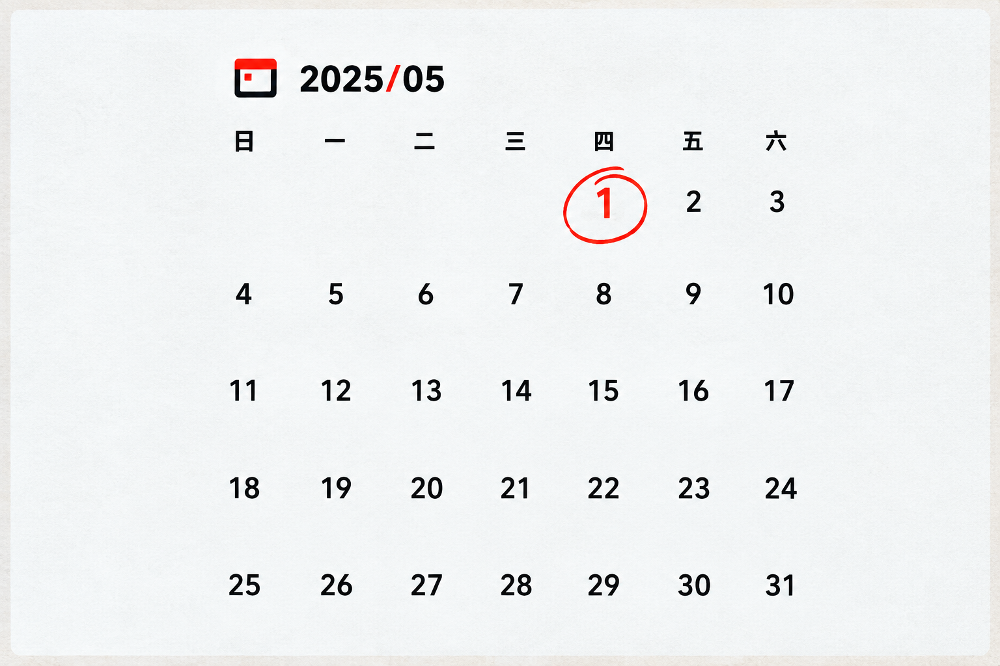

📘 HSK1 · Khung chương trình mới 3.0 · Bài 5
今天我休息Hôm nay anh được nghỉ

🖼️Vị trí chèn ảnh minh hoạ toàn cảnh Bài 5
Bai5_MinhHoa.png
🎯MỤC TIÊU
Mục tiêu bài học
1
Nghe hiểu, đọc hiểu và miêu tả được ngày tháng.
Diễn đạt ngày, tháng, thứ xảy ra sự việc/hành động theo cách nói thông thường trong tiếng Trung.
2
Nghe hiểu và sử dụng động từ năng nguyện “会”.
Diễn đạt việc biết hoặc có khả năng làm một việc gì đó, ví dụ: 你会做饭吗？
3
Nắm vững cách dùng câu vị ngữ danh từ.
Câu không cần động từ “是”, ví dụ: 今天9月8号。
☕热身
Khởi động
给下面的词语选择对应的图片。Lựa chọn hình ảnh tương ứng với các từ ngữ sau.
1

🖼️
2
🖼️
3

🖼️
4
🖼️
5
🖼️
6
🖼️
Adiànnǎo电脑
Bèr líng èr wǔ nián wǔ yuè2025年5月
CXīngqīyī星期一
Djiǎozi饺子
Ezuò fàn做饭
Fxiūxi休息
Đã nối đúng: 0/6
🎉 Chính xác! Bạn đã nối đúng cả 6 cặp — cùng vào bài học mới nhé!
1生词
Bảng từ vựng Bài 5
2课文
Bài khoá 1
📍 在家里，刘明和王一雪在聊天儿。
Tại nhà, Lưu Minh và Vương Nhất Tuyết đang trò chuyện ở trong phòng.
Tại nhà, Lưu Minh và Vương Nhất Tuyết đang trò chuyện ở trong phòng.

🖼️Vị trí chèn ảnh minh hoạ
Bai5_KC1.png
3课文
Bài khoá 2
📍 在公司，王一雪和杨同乐在休息时间聊天儿。
Tại công ty, Vương Nhất Tuyết và Dương Đồng Lạc đang trò chuyện trong giờ nghỉ.
Tại công ty, Vương Nhất Tuyết và Dương Đồng Lạc đang trò chuyện trong giờ nghỉ.
🖼️Vị trí chèn ảnh minh hoạ
Bai5_KC2.png
4课文
Bài khoá 3
📍 在公司，下班后王一雪和杨同乐在聊天儿。
Tại công ty, sau giờ làm Vương Nhất Tuyết và Dương Đồng Lạc đang trò chuyện.
Tại công ty, sau giờ làm Vương Nhất Tuyết và Dương Đồng Lạc đang trò chuyện.
🖼️Vị trí chèn ảnh minh hoạ
Bai5_KC3.png
综合练习|Bài tập tổng hợp
选词填空。
Chọn từ thích hợp kéo vào chỗ trống.
Ngân hàng từ — kéo ra ô trống
A菜
B喜欢
C6月22号
D新
E真
1
今天
。
今天6月22号。
Jīntiān liù yuè èrshí'èr hào.
Hôm nay là ngày 22 tháng 6.
2
杨同乐有一个
电脑。
杨同乐有一个新电脑。
Yáng Tónglè yǒu yí gè xīn diànnǎo.
Dương Đồng Lạc có một cái máy tính mới.
3
王一雪：
你会做这两个
吗？
杨同乐：
我会做。
王一雪：你会做这两个菜吗？杨同乐：我会做。
Wáng Yīxuě: Nǐ huì zuò zhè liǎng gè cài ma? Yáng Tónglè: Wǒ huì zuò.
Vương Nhất Tuyết: Bạn có biết làm hai món này không? Dương Đồng Lạc: Tôi biết làm.
4
王一雪：
你的电脑
好看！
杨同乐：
我也很
。
王一雪：你的电脑真好看！杨同乐：我也很喜欢。
Wáng Yīxuě: Nǐ de diànnǎo zhēn hǎokàn! Yáng Tónglè: Wǒ yě hěn xǐhuan.
Vương Nhất Tuyết: Máy tính của bạn thật đẹp! Dương Đồng Lạc: Tôi cũng rất thích.
看图说话|Miêu tả tranh
用本课新学的词语和语言点描述图片。
Sử dụng từ ngữ và điểm ngôn ngữ đã học trong bài để miêu tả các hình ảnh sau.

🖼️
Bai5_TaTranh_1.png今天。

🖼️
Bai5_TaTranh_2.png杨同乐会。
🖼️
Bai5_TaTranh_3.png我两个菜。

🖼️
Bai5_TaTranh_4.png今天是年月1号，。
🐢
🐇
1.0x
课堂活动|Hoạt động trên lớp
 语
语今天几月几号？星期几？
你
今天……月……号，星期……。
语星期天你休息吗？
你
我休息/不休息，我……
语你会做饭吗？你会做什么菜？
你
我会/不会……，我会做……
语你喜欢什么？为什么？
你
我喜欢……，因为它很……
……
5总结
Tổng kết
✅ Trọng tâm cần nhớ — Toàn bộ nội dung Bài 5
| Mục | Nội dung chính |
|---|---|
| 🎯 Mục tiêu | Nghe hiểu, đọc hiểu và miêu tả được ngày tháng · Nghe hiểu và sử dụng động từ năng nguyện 会 để diễn đạt việc biết/có khả năng làm gì · Nắm vững cách dùng câu vị ngữ danh từ |
| 📖 Ngữ pháp trọng tâm | Câu vị ngữ danh từ: không cần "是", ví dụ 今天9月8号。 · Cách hỏi ngày tháng, thứ: 今天几号？ / 星期几？ · Động từ năng nguyện 会 + động từ để nói về khả năng: 你会做饭吗？, phủ định dùng 不会 · Liệt kê nhiều việc bằng dấu 、và dùng 也 nối thêm ý: 我会做面条儿、饺子，也会做一些菜。 |
| 课文1 · Bài khoá 1 | Tại nhà, Vương Nhất Tuyết hỏi Lưu Minh hôm nay ngày mấy, thứ mấy — được biết hôm nay 9月8号 (mùng 8 tháng 9), là 星期日 (chủ nhật), nên Lưu Minh được nghỉ |
| 课文2 · Bài khoá 2 | Tại công ty trong giờ nghỉ, Vương Nhất Tuyết hỏi Dương Đồng Lạc có biết nấu ăn không — Đồng Lạc biết nấu mì, sủi cảo và một số món khác, chủ nhật cũng tự nấu ăn |
| 课文3 · Bài khoá 3 | Sau giờ làm tại công ty, Vương Nhất Tuyết thấy Dương Đồng Lạc có máy tính mới, khen đẹp — Đồng Lạc nói mình cũng rất thích nó |
🗂️ Điền từ tổng kết — Từ vựng Bài 5 (22 từ)
课文1
王一雪问刘明：今天几几？今天几？刘明说，今天是九月八号，是，他今天。
课文2
王一雪问杨同乐："你做饭吗？"杨同乐说，他会做、，也会做一些。
课文3
杨同乐以后，有了一台。王一雪说："好看！"杨同乐说，他也很它。